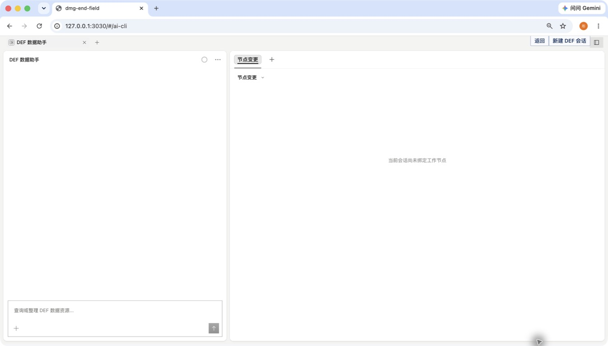
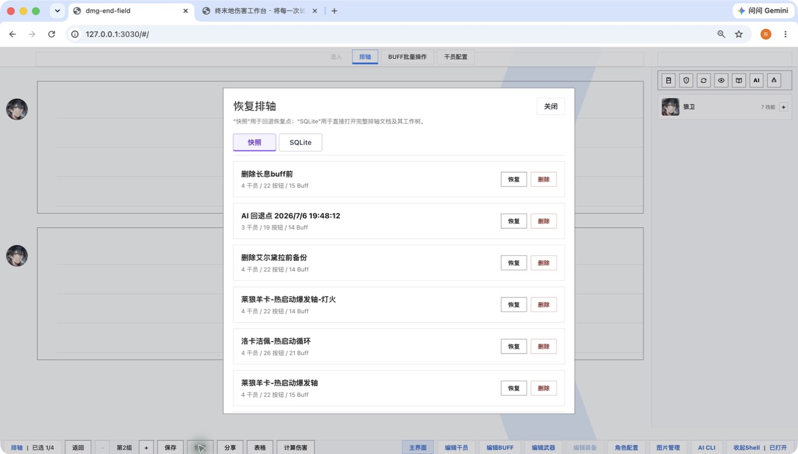

01
FOUR-OPERATOR TIMELINE
四人队伍不是概念，
直接进入已排好的技能轴
恢复后的排轴包含多个技能节点、Buff 与分组。队伍选择是配置、排轴、报告和版本记录共同引用的起点。

LOCAL-FIRST DAMAGE WORKBENCH
为《明日方舟：终末地》配装、排轴、伤害计算与本地资料维护打造的桌面工作台。让复杂思路保留为可保存、可检查、可恢复的文档。
不是自动战斗脚本，也不是一次性在线计算器。
这是一个让每一次推演都留下后续空间的本地工作台。
BUILT FOR ITERATION
配装、排轴、报告与 AI 审查不是分散的功能名；它们围绕同一份可保存、可检查、可恢复的方案工作。
FOUR-OPERATOR TIMELINE
恢复后的排轴包含多个技能节点、Buff 与分组。队伍选择是配置、排轴、报告和版本记录共同引用的起点。
TIMELINE CANVAS
围绕技能按键、敌方抗性、Buff 与命中细节建立排轴，把复杂配置放回同一张可操作的画布。
查看真实会话证据 →REPORTING
对比方案不必只停留在当前页面。排轴支持保存、恢复、分享，并可通过表格和伤害报告继续整理。
DEF DATA ASSISTANT
内置 DEF 数据助手，通过受限的领域工具协作。它的修改先成为提案，等待检查与确认。

MORE IN THE WORKBENCH
干员配置武器与装备Buff 批量编辑命中与抗性微调伤害计算过程保存 / 恢复 / 分享图片管理自定义资料SAVED DEF SESSION / 2026-07-14
主证据来自已保存的“新手碎冰队”会话与同一份主排轴：弭弗、陈千语、埃特拉、阿列什。截图、节点树和下列步骤都取自同一条可恢复的链路。
def_data_game_knowledge 找到碎冰队资料，并锁定“装备养成推荐”章节。def_data_game_knowledge_section 只读取指定章节，保留推荐依据和边界。def_data_team_loadouts、武器/装备候选与配装候选共同生成可确认的预览。def_operator_config_patch 逐人变更，并以工作台镜像回写结果作后置校验。LIVE PRODUCT SURFACES
以下全部来自本地运行的工作台：四人选队、已排技能轴、可计算报表、资料工作表、资源库、恢复历史与工作节点树。每个区域都有自己的操作、数据与导入导出边界。
01 / TEAM → TIMELINE
最多四名干员构成出战队列。排轴画布按分组组织 A / B / E / Q 技能节点；每个节点都能继续承载 Buff、状态、敌方抗性、命中微调和伤害详情。
01.5 / TIMELINE → BUFF WORKBENCH
排轴上的节点并非只负责排布顺序：可按干员框选并批量增删 Buff，也可打开单个技能，查看生效条件、期望伤害、暴击 / 非暴击结果，以及每一个伤害乘区的计算依据。


02 / CALCULATE → REPORT
报告不是一张总伤截图：当前队伍的四人配装、两组完整排轴、角色伤害占比与累计时序拆为三页，同时并列展示，方便从配置一路核验到结果。


LOCAL DATA STUDIO
干员、武器、装备和 Buff 都有独立的本地编辑面，可新建、保护、整理、保存、导入与导出。图片资源另有专门的管理器，而不是散落在文件夹里。


VERSION CONTROL FOR A TIMELINE
恢复面板列出每个快照的队伍、按钮和 Buff 数量；完整 SQLite 文档再提供工作节点树。AI 草稿、校验节点、人工 checkpoint、风险与回退路径一并可见。


VISIBLE BOUNDARIES
数据事实源在本机。排轴不是易失的页面状态，而是一份可恢复的 SQLite 文档。
AI 没有任意权限。它通过已定义的角色、武器、装备、伤害与排轴工具操作。
运行时可被验证。Harness 用真实会话回放比较候选与稳定行为，关注修复、回归和用户状态安全。
READY WHEN YOU ARE
一个非官方的个人工具与研究项目。用于资料整理、配装推演和开发实践。
前往 GitHub ↗